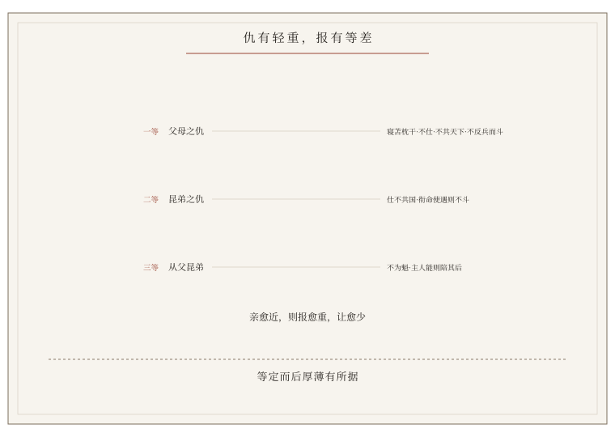

檀弓上 · 三·五十二 · 第 255 课
子夏问于孔子曰：「居父母之仇，如之何？」夫子曰：「寝苫枕干，不仕，弗与共天下也。遇诸市朝，不反兵而斗。」……「请问居昆弟之仇，如之何？」曰：「仕弗与共国，衔君命而使，虽遇之，不斗。」……「请问居从父昆弟之仇，如之何？」曰：「不为魁，主人能，则执兵而陪其后。」注「不可以并生」「为负而废君命」「魁犹首也」「为其负当成之」。
说什么事：三种仇，三种报法；亲愈近，则报愈重，让愈少。
落在哪一层：礼，兼及义与法。论「仇之等差」。
为何编在此位：上节论丧之饰，此节论仇之报。皆礼之涉于生死者。
【经】子夏問於孔子曰：「居父母之仇，如之何？」夫子曰：「寢苫枕干，不仕，弗與共天下也。遇諸市朝，不反兵而鬥。」曰：「請問居昆弟之仇，如之何？」曰：「仕弗與共國，銜君命而使，雖遇之，不鬥。」曰：「請問居從父昆弟之仇，如之何？」曰：「不為魁。主人能，則執兵而陪其後。」
【注】寝苫枕干，不仕，虽除丧，居处犹若丧也。干，盾也。不可以并生。遇诸市朝，不反兵而斗：言虽适市朝，不释兵。仕弗与共国：衔君命而使，虽遇之不斗，为负而废君命。魁犹首也。天文北斗，魁为首，杓为末。主人能，则执兵而陪其后：为其负当成之。
【疏】此一节论亲疏报仇之法。「遇诸市朝」者，上既云「不仕」，得有遇诸朝者，身虽不仕，或有事须入朝，故得有遇诸朝也。「不反兵而斗」者，言执杀之备，身常带兵，虽在市朝，不待反还取兵即当斗也。然朝在公门之内，兵器不入公门，身得持兵入朝者，案《阍人》「掌中门之禁」，但兵器不得入中门耳；其大询众庶在皋门之内，则得入也。且朝文既广，设朝或在野外，或在县鄙乡遂，但有公事之处，皆谓之朝；兵者亦谓佩刀已上，不必要是矛戟。上《曲礼》云「兄弟之雠不反兵」，此父母之仇云「不反兵」，又此昆弟之仇不云「不反兵」者：父母与昆弟之仇皆不反兵，上《曲礼》昆弟之仇云「不反兵」者，谓非公事或不仕者，故恒执持杀之备；此文昆弟之仇据身仕为君命出使，遇之不斗，故不得云「不反兵」也。二文相互乃足。
居父母之仇 处父母之仇。居，处也。
寝苫枕干 卧草苫、枕盾牌。苫，草席；干，盾。
不仕 不作官。
弗与共天下 不与其同处天下。注「不可以并生」。
不反兵 不返回取兵器。注「言虽适市朝，不释兵」。
衔君命而使 奉君命出使。
为负而废君命 注语。负，败也；恐斗败而废君命。
魁 注「犹首也」。首倡者。
陪其后 执兵在其后相助。
子夏问孔子：「处父母之仇，该怎么办？」夫子说：「卧草席、枕盾牌，不作官，不与他共处天下。在市朝遇见，不回去取兵就斗。」「请问处昆弟之仇？」答：「作官但不与他同国；若奉君命出使，虽遇之不斗。」「请问处从父昆弟之仇？」答：「不作首倡；主人能报，就执兵在他后面相助。」
此节三问三答，其序由亲而疏。父母之仇最重：不仕、不与共天下、遇即斗、不反兵——四者皆极。昆弟之仇次之：可与共国之外，仕而遇则不斗（以君命为重）。从父昆弟之仇又次之：不为魁，只陪其后。同一「仇」字，而报之法三等，此之谓等差。等差之所据不在情之烈，在亲之远近与义之轻重。
第一层 寝苫枕干 注「虽除丧，居处犹若丧也」。除丧而居处如丧，是不敢安也。枕干者，卧亦不离兵，示此仇未报，身不得安枕。
第二层 弗与共天下 注「不可以并生」。此语最重：非不欲共处，是不容共处。然此语须与下文「不仕」合看：不仕者，不与同朝；不共天下者，不与同生。二者皆绝之，而不曰「杀之」。
第三层 市朝不反兵 疏辨最细：兵器不入公门，而「不反兵」者，所执者佩刀以上，不必矛戟；又「朝文既广」，野外、县鄙乡遂凡有公事处皆谓之朝。此见礼家解经不使一字落空。
第四层 昆弟之仇不斗于使 注「为负而废君命」。负者败也。恐斗而不胜，废君之命。故君命重于昆弟之仇。此一层最见礼之权：仇可后，命不可废。
第五层 从父昆弟不为魁 注引北斗「魁为首，杓为末」为训。不为魁者，不首倡；主人能报则陪其后。此见礼不逼人以过：亲已疏，则让其为而不夺其名。
与今日何干 今日无复仇之法，而此节之义仍可读：凡一事之报，当先定其亲疏轻重之等；等定，则报之厚薄、让之多寡皆有所据。一味言报，是废等；一味言让，是废义。
| 左 | 右 |
|---|---|
| 父母之仇 | 寝苫枕干、不仕、不共天下、不反兵 |
| 昆弟之仇 | 仕弗与共国；衔命使则虽遇不斗 |
| 从父昆弟之仇 | 不为魁；主人能则执兵陪后 |
| 亲愈近 | 报愈重，让愈少 |
| 为负而废君命 | 君命重于昆弟之仇 |
| 魁犹首也 | 北斗魁为首，杓为末 |
画一处草庐与市集之间的路上，视点平。左侧草庐，庐内一张草席、席上枕着一面盾；庐外站着一位士人（衣素、腰佩短刀、目光前视）。右侧远处一段市集（几间铺面、几个背影）。路中无人。不写文字、不画人面细节。赭色只用在盾的边沿与士人腰间的刀鞘。
